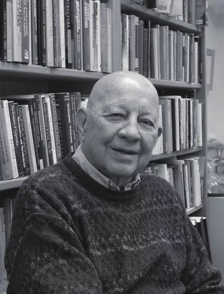

从笔记开始，是最快的成文方式。
这篇是回顾《马奇论管理 真理、美、正义和学问》笔记之后的摘抄和阅后感。

马奇告诉我们，如何在领导工作中，发现美和快乐
然而对于一个领导者来说，说“这感觉太棒了”是正当的，特别是如果这样的快乐不是来自官位、职称、薪水之类的东西，而是来自工作本身的内在特性，来自展示创造力和做出成就的机会。再也没有什么比看见个领导者筋疲力尽、精力透支又不能从所做的事情当中获得快乐更糟的了。
能把管理备忘录写出诗歌感觉的人，值得推崇。（马奇也是个诗人，诗歌最能表现矛盾和复杂）
在人生里面，我们的义务之一，就是如果可能的话，让生活变得更加美丽一些，特别是在我们的平凡生活之中。对于那些能够打理一个小小的花园，让自己的生活更加美好的人，我心存倾慕。同样，对于那些能够写出优雅的备忘录，把它们看作诗歌而非仅仅文件的管理者，我心存倾慕。
生活中，他给自己和朋友的忠告：谈论严肃话题之前，他得是对方的酒友，三年时间的酒友那种。（经常给人忠告的、好为人师的，慎言还是有必要的，不当的沟通会主导到错误的方向去。马奇大概很少会严肃。）
马奇：我过去常常说，在和某人进行严肃的谈话之前，你至少要跟他做三年的酒友。不要开场就谈正题，要先创建轻松的环境，让他党得安全，从而敝开心扉，不管他说什么，都不要评判。
访谈者问到他“伟大的领导者谦卑吗？ 我感觉我再也找不到比这个更好的回答了。
我知道我只是沙滩上一颗小鹅卵石，但是我是一颗非常坚硬的鹅卵石。就是这种感觉
如何去看和做，他有一个绝妙的建议。
我曾经写过一篇文章，指出了领导者面临的一个问题：他们所生活的世界，要求清晰，清晰的目标、清晰的理解、精确的判断，等等；但是，他们所生活的世界，并不清晰，而是自相矛盾。这他们也知道。因此，他们生活在这样一个世界：他们必须说一套做一套。对于许多人来说，那是无法忍受的
文章的核心观点是：他们应该读诗。因为在大多数时候，诗歌近过两个镜头着世界，一个清晰的，一个模糊的。因为生活既清晰又模糊，人既可敬文卑酃。两方面同时存在，你必须同时看到它们，不要妄图调和它们之间的冲突。而要把它们都看作人生的本质。我不确定有多少领导者在我的说服之下去读诗，但是我认为，如果有很多的话，那会很好。你最好也去读一读。
以前经常看到听到想到这么一句话：不辜负的时候去爱。。失去人的本质。这里马奇是基于身份角度去写的。人作为人的这个身份,它颂扬非结果主义人性观.
伟大的热情、伟大的承诺、伟大的行为，并不是因为对伟大的结果抱有希望，而是因为愿意信奉正当人生随心所欲且不带条件的主张。堂吉诃德提醒我们，如果我们只在不被辜负的时候去信任，只在有所回报的时候去爱，只在学有所用的时候去学习，那么我们就放弃了为人的本质特征一一愿意在自我概念的名义下行动，不管结果如何。
与结果主义是相反的。当然也不是全然的唐吉柯德式，毕竟他也自言，他将人推向唐吉柯德但是如果那人全然朝向了那一边，他也会去拉回来的。
不严肃，放松，也是随心所欲的一种实现吧。
最后还有一个绝妙的回答，对于写作，为何写作很有启发。看起来也是不错的和自己相处的方式。
想法而非兜售想法。我是一个学者，我做一个学者该做的事情。我思考问题，做研究，把我的思想和研究写成文章，拿到专业杂志上发表。我写文章，与其说是为了表达我的思想，不如说是为了理解我的思想。
学问，他所在乎的不在于是否有效用，而是美不美。想法是否迷人、让人眼前一亮——美丽事物的共通之处。
管理者要不要读学术理论？马奇这么回答我们
面临意外问题或者未知问题的时候，学术知识的作用就会凸现出来。学术知识提供是的思考框架，而不是解决对策
毕竟管理者要将学术和管理环境结合起来。因为学术提供的是框架。
寻求实用建议，而学者顾问给了，那么管理者就该炒掉学者顾问。学看没有实践经验，对管理问题的背景不够了解，无法针对具体情境提出具体建议。学者顾问能做的，就是发表一些看法。管理者将学者的看法与自己对问题背景的了解结合在一起，也许能够找到更好的对策。是学术知识和经验知识的相互结合而不是相互替代带来改善。
补充一点：马奇有名的垃圾桶理论，不是他自己提出的，他并没有居功自诩，他提到了迈克尔.科恩以及约翰.奥尔森 合写的
垃圾桶，其实不是象征着混乱，而是
我们理论中的“垃圾桶”有两层意思。第一层，选择基本上是模糊的。有很多不确定、很多混乱，标准的决策制定理论不能很好地表征这些不确定性和模糊性。选择机会让各种各样互不相干的问题、对策、目标、利益和关注汇聚到一起，例如，一个主题为“停车场”的会议，可能会讨论研究计划、性骚扰、管理者薪酬和广告政策。然而，对于决策制定者来说，时间是稀缺资源，他们在某一选择机会上分配多少时间会影响到选择结果。
第二层，我们试图描述组织在垃圾桶情境下如何处理问题流、对策流和决策制定者流。我们的核心观点是。问题和对策之间的联系很大程度上取决于它们“到达”垃圾桶的同时性，选择结果取决于在选择机会上投入多少时间、多少精力，选择情境容易涌入过多的问题，只有在问题（以及问题的发起者）进人其他决策场之后选择才能作出，因此，问题一般得不到解决。
2020年3月5日 21:45 改完
备：
马奇生于 1928 年，很早就成为学术界公认的大师。他在早期职业生涯所写的两本书，一本是与诺贝尔经济学奖得主赫伯特・西蒙于 1958 年合写的《组织》另外一本是与理査德・赛尔特于 1963 年合写的《企业行为理论》，是组织研究的经典之作。马奇于 1995 年从斯坦福退休.